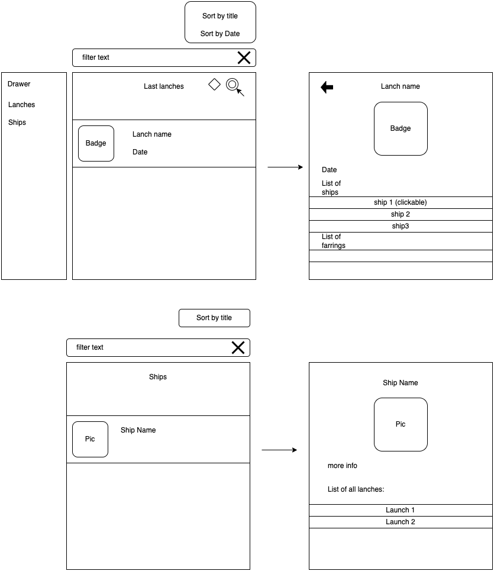

In this codelab you we will create simple spacex launch info app
Before and During writing the code, create a documantaion helping you and other to understend the code
You can use drao.io to create umls diagrams
In this section you will build app with all the thing you learn so far
The app allow us to see spacex lanches details
The app contains 4 screens: launchs screen, launch details screen, ships screen, ships details screen.
The app contains drawer to let us choose between lanunches screen and ships screens

title = launch list
filter by (search line):
sorting by:
cell:
behaviour:
title = name of the lanch
- title
- badge
- date
- ship list
- farring list
behaviour:
title = ship list
filter by (search line):
sorting by:
cell:
behaviour:
title = name of the ship
behaviour:
Use https://github.com/r-spacex/SpaceX-API
Documantation is in repository main readme file
every day check for changes in lanches,
If changed - notification the user
when press the notification - the lanch details will be opened,
when press back the launch list will oppened